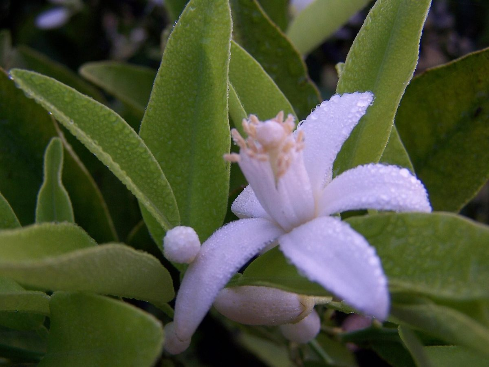
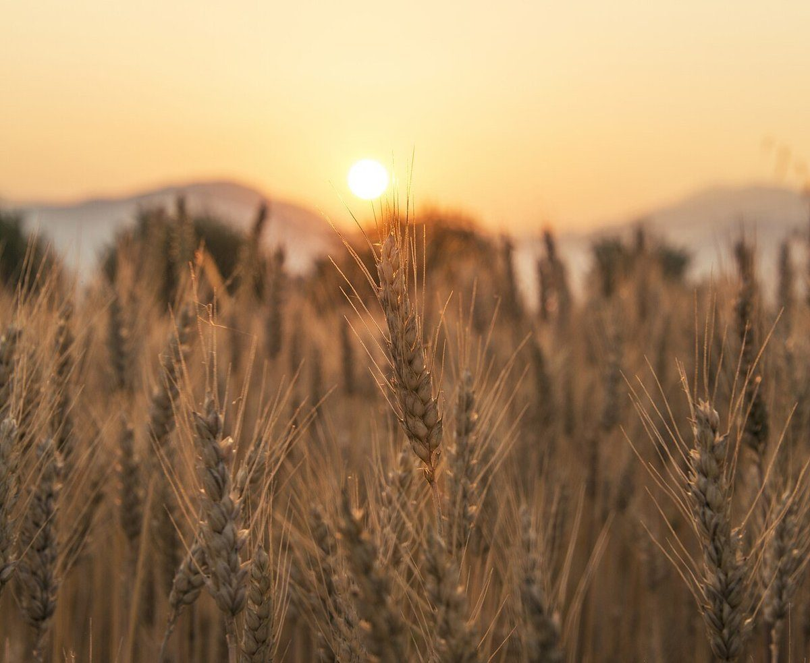
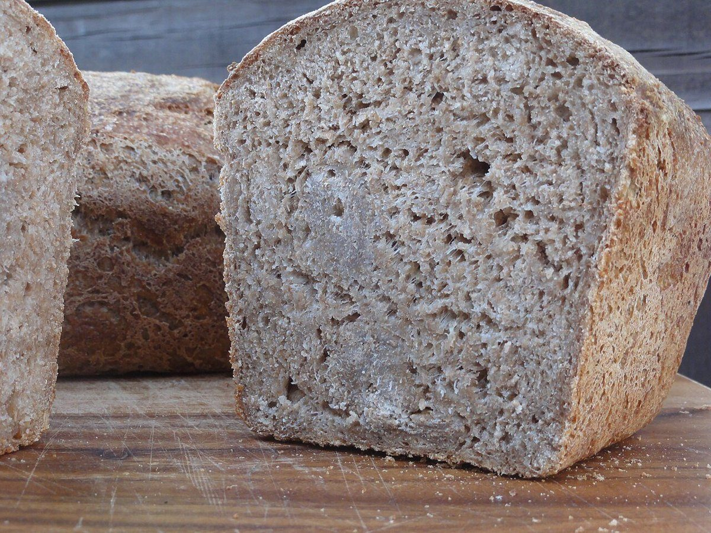
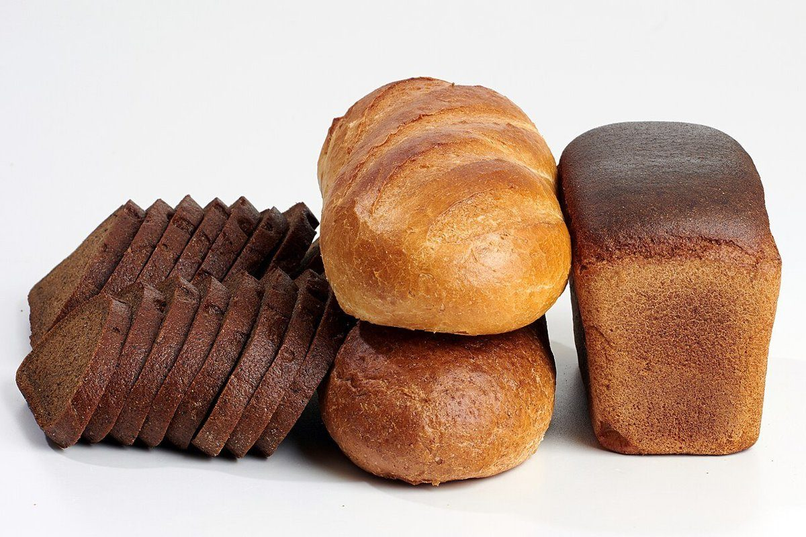

2つめの切れ / 全5切れ
店のこと
お店について確認できているのは、所在地とInstagramのアカウントだけです。
このページの「想像してみる」部分は、制作側が想像して書いたものです。お店の実際の様子・考え・商品とは関係ありません。
確認できていること
- 店名は「Orange」、業種はパン屋(ベーカリー)
- 所在地は高知県土佐清水市栄町8-1(〒787-0325)
- 電話番号はなし。連絡はInstagramから
- 営業時間・定休日・メニュー・価格・ご予約・駐車場は準備中

想像してみる
五つに分けると
パンの世界を、くし形に五つ切るつもりで思い浮かべてみました。粉、夕日の麦穂、断面、焼き色、そして並んだ姿。ここに載せているのは、そのイメージを伝えるフリー素材です。
- 一切れめ 粉と小麦

撮影地不明のイメージ - 二切れめ 夕日の麦穂

撮影地不明のイメージ - 三切れめ 断面

撮影地不明のイメージ - 四切れめ 焼き色

撮影地不明のイメージ - 五切れめ 並んだ姿

国外のイメージ(ロシア)
これらは店の商品ではなく、何を提供しているかを示すものでもありません。